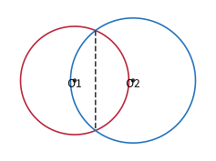
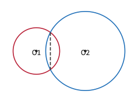
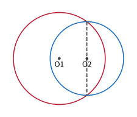

別冊練習問題 9 の解答 2円の共通弦の長さ
(1) 2円 \(x^2+y^2=169\) と \((x-14)^2+y^2=225\) の共通弦の長さを求めよ。
共通弦の直線
\(x^2+y^2=169\) と \((x-14)^2+y^2=225\) の差：
\[2\cdot 14x-196=-225+169\ \ \text{を整理して}\ x=5\]
弦の半分
\(x=5\) を \(x^2+y^2=169\) に代入：
\[y^2=169-25=144,\qquad y=\pm12\]共通弦の長さ
\[2\times12=24\]【答案】
\[24\]答
(2) 2円 \(x^2+y^2=100\) と \((x-21)^2+y^2=289\) の共通弦の長さを求めよ。
共通弦の直線
\(x^2+y^2=100\) と \((x-21)^2+y^2=289\) の差：
\[2\cdot 21x-441=-289+100\ \ \text{を整理して}\ x=6\]
弦の半分
\(x=6\) を \(x^2+y^2=100\) に代入：
\[y^2=100-36=64,\qquad y=\pm8\]共通弦の長さ
\[2\times8=16\]【答案】
\[16\]答
(3) 2円 \(x^2+y^2=25\) と \((x-3)^2+y^2=16\) の共通弦の長さを求めよ。
共通弦の直線
\(x^2+y^2=25\) と \((x-3)^2+y^2=16\) の差：
\[2\cdot 3x-9=-16+25\ \ \text{を整理して}\ x=3\]
弦の半分
\(x=3\) を \(x^2+y^2=25\) に代入：
\[y^2=25-9=16,\qquad y=\pm4\]共通弦の長さ
\[2\times4=8\]【答案】
\[8\]答